Handling Replicates with Bedtools or IDR
Contributors: Meeta Mistry, Radhika Khetani
Approximate time: 75 minutes
Learning Objectives
- Combining replicates using simple overlap with Bedtools
- Combining replicates to only get the highly reproducible peaks using the IDR method
Handling replicates in ChIP-Seq
As with any high-throughput experiment, a single assay is often subject to a substantial amount of variability. Thus, it is highly recommended to setup your experimental design with a minimum of 2-3 biological replicates. Presumably, two replicates measuring the same underlying biology should have high consistency but that is not always the case. In order to evaluate consistency between replicates we require metrics that objectively assess the reproducibility of high-throughput assays.
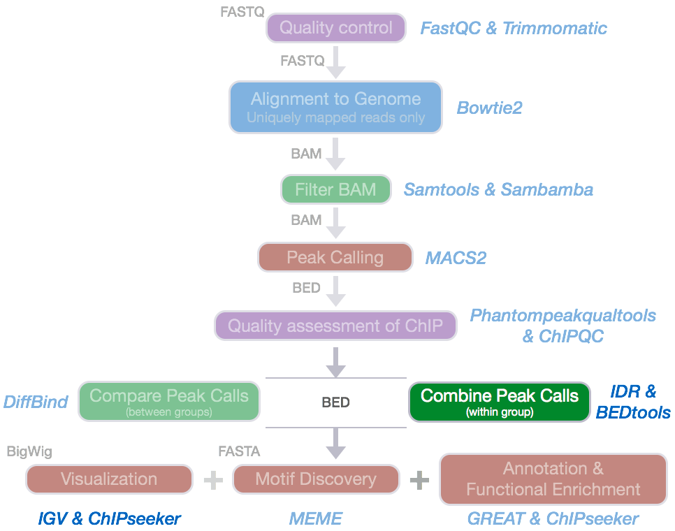
Since we have 2 replicates in this example, we want to consider only those peaks that are present in both replicates before we compare the peaks from the two transcription factors to one another.
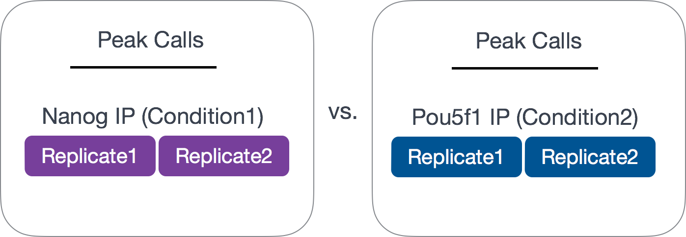
Common methods for handling replicates includes taking overlapping peak calls across replicates and then assessing differences in binding regions. Additionally, there are more complex methods that employ statistical testing and evaluate the reproducibility between replicates. In this lesson we will cover both methods.
NOTE: A recent talk on "Accessing and using ENCODE data" linked here where they talk about handling replicates and the similarities and differences when using an overlap versus IDR analysis.
Overlapping peaks
In this section, our goal is to determine what peaks are in common between the the two replicates for each factor (Nanog and Pou5f1). To perform this task we are going to use a suite of tools called bedtools.
bedtools
The idea is that genome coordinate information can be used to perform relatively simple arithmetic, like combining, subsetting, intersecting, etc., to obtain all sorts of information. bedtools from Aaron Quinlan's group at University of Utah is easy to use, and an extremely versatile tool that performs tasks of this nature.
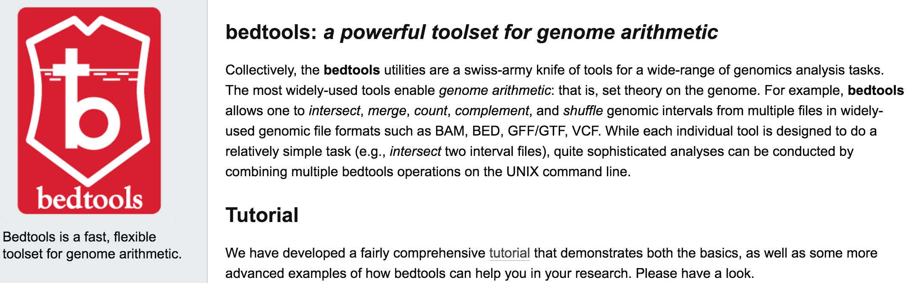
As the name implies, this suite of tools works with Bed files, but it also works with other file formats that have genome coordinate information.
NOTE: When working with multiple files to perform arithmetic on genomic coordinates, it is essential that all files have coordinate information for the same exact version of the genome and the same coordinate system (0-based or 1-based)!
Setting up
Let's start an interactive session and change directories and set up a space for the resulting overlaps.
$ srun --pty -p short -t 0-12:00 --mem 8G --reservation=HBC bash
$ cd ~/chipseq/results/
$ mkdir bedtools
Load the modules for bedtools and samtools:
$ module load gcc/6.2.0 bedtools/2.26.0 samtools/1.3.1
Finding overlapping peaks between replicates
The bedtools intersect command only reports back the peaks that are overlapping with respect to the file defined as a in the command.
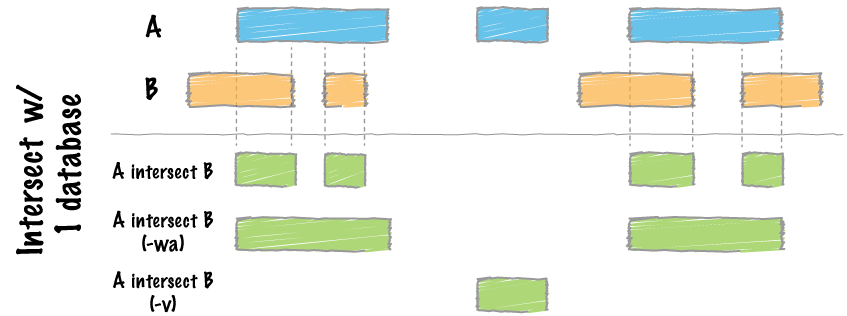
To find out more information on the parameters available when intersecting, use the help flag:
$ bedtools intersect -h
The intersect tool evaluates A (file 1) and finds regions that overlap in B (file 2). We will add the -wo which indicates to write the original A (file 1) and B (file 2) entries plus the number of base pairs of overlap between the two features.
Let's start with the Nanog replicates:
$ bedtools intersect \
-a macs2/Nanog-rep1_peaks.narrowPeak \
-b macs2/Nanog-rep2_peaks.narrowPeak \
-wo > bedtools/Nanog-overlaps.bed
How many overlapping peaks did we get?
We'll do the same for the Pou5f1 replicates:
$ bedtools intersect \
-a macs2/Pou5f1-rep1_peaks.narrowPeak \
-b macs2/Pou5f1-rep2_peaks.narrowPeak \
-wo > bedtools/Pou5f1-overlaps.bed
Note that we are working with subsetted data and so our list of peaks for each replicate is small. Thus, the overlapping peak set will be small as we found with both Nanog and Pou5f1. What is interesting though, is that even though the individual peak lists are smaller for Pou5f1 samples, the overlapping replicates represent a higher proportion of overlap with respect to each replicate.
Historical Note: A simpler heuristic for establishing reproducibility was previously used as a standard for depositing ENCODE data and was in effect when much of the currently available data was submitted. According to this standard, either 80% of the top 40% of the peaks identified from one replicate using an acceptable scoring method should overlap the list of peaks from the other replicate, OR peak lists scored using all available reads from each replicate should share more than 75% of regions in common. As with the current standards, this was developed based on experience with accumulated ENCODE ChIP-seq data, albeit with a much smaller sample size.
Irreproducibility Discovery Rate (IDR)
IDR is a framework developed by Qunhua Li and Peter Bickel's group that compares a pair of ranked lists of regions/peaks and assigns values that reflect its reproducibility.
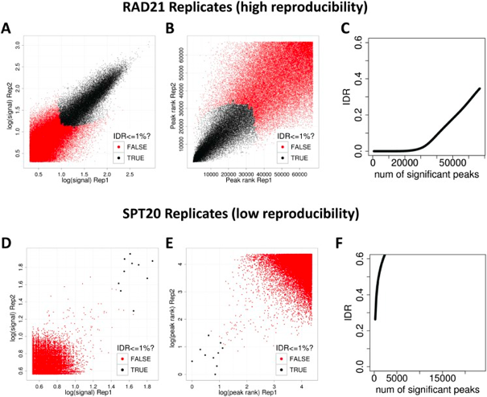
"The basic idea is that if two replicates measure the same underlying biology, the most significant peaks, which are likely to be genuine signals, are expected to have high consistency between replicates, whereas peaks with low significance, which are more likely to be noise, are expected to have low consistency. If the consistency between a pair of rank lists (peaks) that contains both significant and insignificant findings is plotted, a transition in consistency is expected (Fig. 1C). This consistency transition provides an internal indicator of the change from signal to noise and suggests how many peaks have been reliably detected." https://ccg.vital-it.ch/var/sib_april15/cases/landt12/idr.html
It is extensively used by the ENCODE and modENCODE projects and is part of their ChIP-seq guidelines and standards. It has been established for submission of ChIP-seq data sets and have been constructed based on the historical experiences of ENCODE ChIP-seq data production groups.
Why IDR?
- IDR avoids choices of initial cutoffs, which are not comparable for different callers
- IDR does not depend on arbitrary thresholds and so all regions/peaks are considered.
- It is based on ranks, so does not require the input signals to be calibrated or with a specific fixed scale (only order matters).
Components of IDR
The IDR approach creates a curve, from which it then quantitatively assesses when the findings are no longer consistent across replicates. There are three main components:
1) A correspondence curve: a graphical representation of matched peaks as you go down the ranked list. Qualitative, not adequate for selecting signals.
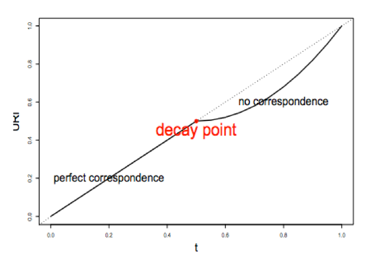
2) An inference procedure: summarizes the proportion of reproducible and irreproducible signals. Quantitative, using a copula mixture model.
What proportion of identifications have a poor correspondence, i.e. falling into ”noise”? How consistent are the identifications before reaching breakdown?
3) Irreproducible Discovery Rate (IDR): Derive a significance value from the inference procedure (#2) in a fashion similar to FDR, and can be used to control the level of irreproducibility rate when selecting signals. i.e. 0.05 IDR means that peak has a 5% chance of being an irreproducible discovery
The IDR pipeline
There are three main steps to the IDR pipeline:
- Evaluate peak consistency between true replicates
- Evaluate peak consistency between pooled pseudo-replicates
- Evaluate self-consistency for each individual replicate
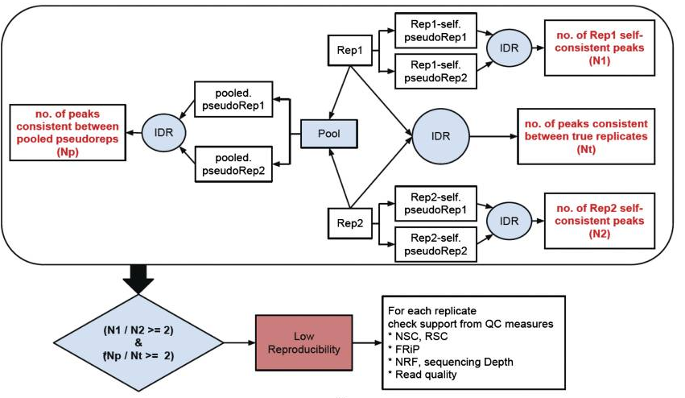
This figure is taken from the ENCODE ChIP-Seq Guidelines.
We will only be running Step 1 in this lesson, but will discuss steps 2 and 3 in a bit more detail.
Running IDR
To run IDR we should be using the full dataset, and if you are interested the full BAM files can be downloaded from ENCODE, however for timeliness and consistency we will continue with our subsetted data for this lesson.
To run IDR the recommendation is to run MACS2 less stringently to allow a larger set of peaks to be identified for each replicate. In addition the narrowPeak files have to be sorted by the -log10(p-value) column. We have already performed these 2 steps for the samples from both groups, and the commands we used for it as listed below. To reiterate, you do NOT NEED TO RUN the following lines of code, we have already generated narrowPeak files for you!
###DO NOT RUN THIS###
# Call peaks using a liberal p-value cutoff
macs2 callpeak -t treatFile.bam -c inputFile.bam -f BAM -g 1.3e+8 -n macs/NAME_FOR_OUPUT -B -p 1e-3 2> macs/NAME_FOR_OUTPUT_macs2.log
#Sort peak by -log10(p-value)
sort -k8,8nr NAME_OF_INPUT_peaks.narrowPeak > macs/NAME_FOR_OUPUT_peaks.narrowPeak
IDR will work with many different Peak callers, the following have been tested:
- SPP - Works out of the box
- MACS1.4 - DO NOT use with IDR
- MACS2 - Works well with IDR with occasional problems of too many ties in ranks for low quality ChIP-seq data.
- HOMER - developers have a detailed pipeline and code (in beta) for IDR analysis with HOMER at https://github.com/karmel/homer-idr
- PeakSeq - Run with modified PeakSeq parameters to obtain large number of peaks
- HotSpot, MOSAiCS, GPS/GEM, …
Setting up
IDR is an open source tool available on GitHub. It is a Python program that has already been installed on O2. The first thing we need to do is load the module (and all dependency modules) to run IDR:
$ module load gcc/6.2.0 python/3.6.0
$ module load idr/2.0.2
Now let's move into the chipseq/results directory and create a new directory for the results of our IDR analysis.
$ cd ~/chipseq/results
$ mkdir IDR
Copy over the sorted narrowPeak files for each replicate for Nanog and Pou5f1:
$ cp /n/groups/hbctraining/chip-seq/idr/macs2/*sorted* IDR/
Peak consistency between true replicates
The first step is taking our replicates and evaluating how consistent they are with one another.
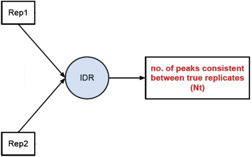
To run IDR we use the idr command followed by any necessary parameters. To see what parameters we have available to us, we can use:
$ idr -h
For our run we will change only parameters associated with input and output files. We will also change the field on which we want to create ranks since the defaults are set for SPP peak calls. Parameters that pertain to the inference procedure are left as is, since the chosen defaults are what the developers believe are reasonable in the vast majority of cases.
Move into the IDR directory:
$ cd IDR
Let's start with the Nanog replicates:
$ idr --samples Nanog_Rep1_sorted_peaks.narrowPeak Nanog_Rep2_sorted_peaks.narrowPeak \
--input-file-type narrowPeak \
--rank p.value \
--output-file Nanog-idr \
--plot \
--log-output-file nanog.idr.log
And now with the Pou5f1 replicates:
$ idr --samples Pou5f1_Rep1_sorted_peaks.narrowPeak Pou5f1_Rep2_sorted_peaks.narrowPeak \
--input-file-type narrowPeak \
--rank p.value \
--output-file Pou5f1-idr \
--plot \
--log-output-file pou5f1.idr.log
Output files
The output file format mimics the input file type, with some additional fields. Note that the first 10 columns are a standard narrowPeak file, pertaining to the merged peak across the two replicates.
Column 5 contains the scaled IDR value, min(int(log2(-125IDR), 1000) For example, peaks with an IDR of 0 have a score of 1000, peaks with an IDR of 0.05 have a score of int(-125log2(0.05)) = 540, and IDR of 1.0 has a score of 0.
Columns 11 and 12 correspond to the local and global IDR value, respectively. The global IDR is the value used to calculate the scaled IDR number in column 5, it is analogous to a multiple hypothesis correction on a p-value to compute an FDR. The local IDR is akin to the posterior probability of a peak belonging to the irreproducible noise component. You can read this paper for more details.
Columns 13 through 16 correspond to Replicate 1 peak data and Columns 17 through 20 correspond to Replicate 2 peak data.
More detail on the output can be found in the user manual. Also, if you have any unanswered questions check out posts in the Google groups forum.
Let's take a look at our output files. How many common peaks are considered for each TF?
$ wc -l *-idr
To find out how may of those shared regions have an IDR < 0.05, we can take a look at the log files. Alternatively, since we requested all peaks and their IDR value as output we can also filter the file using an awk command.
$ awk '{if($5 >= 540) print $0}' Nanog-idr | wc -l
$ awk '{if($5 >= 540) print $0}' Pou5f1-idr | wc -l
Which of the two TFs show better reproducibility between replicates? How does this compare to the bedtools overlaps?
Output plots
There is a single image file output for each IDR analyses (.png files). Within each image you should see four plots. Since we are working with such a small subset of data, the plots are not as meaningful. Below we have provided the images generated for the full dataset for Pou5f1.
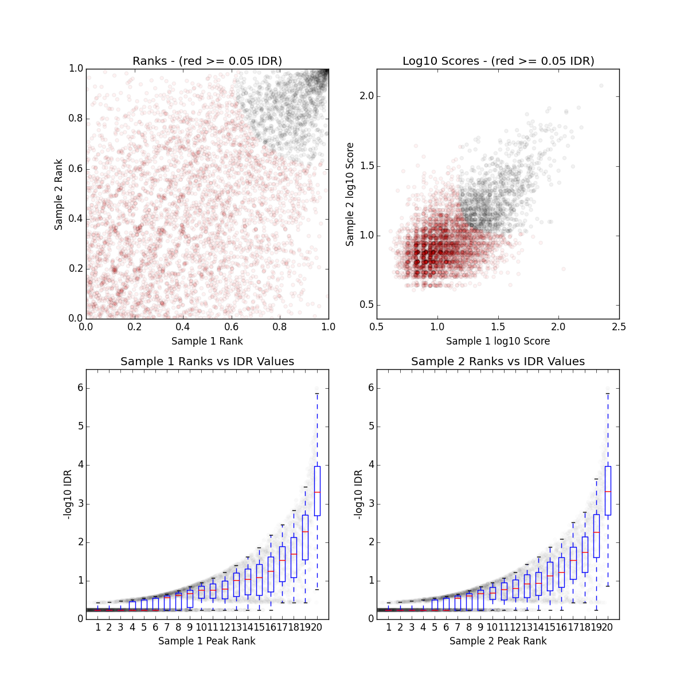
The plot for each quadrant is described below:
Upper Left: Replicate 1 peak ranks versus Replicate 2 peak ranks - peaks that do not pass the specified idr threshold are colored red.
Upper Right: Replicate 1 log10 peak scores versus Replicate 2 log10 peak scores - peaks that do not pass the specified idr threshold are colored red.
Bottom Row: Peak rank versus IDR scores are plotted in black. The overlayed boxplots display the distribution of idr values in each 5% quantile. The IDR values are thresholded at the optimization precision - 1e-6 by default.
Peak consistency between pooled pseudoreplicates
Once you have IDR values for true replicates, you want to see how this compares to pooled replicates. This is a bit more involved, as it requires you to go back to the BAM files, merge the reads and randomly split them into two pseudo-replicates. If the original replicates are highly concordant, then shuffling and splitting them should result in pseudo-replicates that the reflect the originals. Therefore, if IDR analysis on the pooled pseudo-replicates results in a number of peaks that are similar (within a factor of 2) these are truly good replicates.
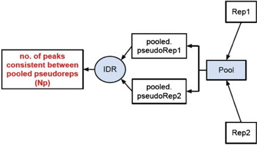
We will not run this analysis, but have provided a bash script below if you wanted to take a stab at it. To run this script you will need to:
- Provide BAM files and run it for each TF separately. These are located at
/groups/hbctraining/ngs-data-analysis-longcourse/chipseq/bowtie2. Or you can point to the BAM files generated from Bowtie2 in the home directory. - Be sure to also ask for enough memory in your
sbatchcommand. - Change the paths for output to the directories that are relevant to you
NOTE 1: For the paths and directories we are using
/n/scratch2. This script generates fairly large intermediate files which can quickly fill up your home directory. To avoid this please make use of the scratch space and once the analysis is complete move over only the relevant files.NOTE 2: To run the script below you will have to replace every instance of
mm573with your account name.
#!/bin/sh
# USAGE: sh pseudorep_idr.sh <input BAM rep1> <chip BAM rep1> <input BAM rep2> <chip BAM rep2> <NAME for IDR output>
# This script will take the BAM files and perform the following steps:
## Merge BAMs for ChiP files,
## Shuffle reads and split into two new BAM files (pseudo-replicates),
## Merge BAMs for Input files,
## Shuffle reads and split into two new BAM files (pseudo-replicates),
## Call peaks on pseudo-replicates with MACS2 ,
## Sort peaks called on pseudo-replicates,
## IDR analysis using pseudo-replicate peak calls
# Please use the following SLURM directives:
## -t 0-12:00
## -p short
## --mem=40G
date
inputFile1=`basename $1`
treatFile1=`basename $2`
inputFile2=`basename $3`
treatFile2=`basename $4`
EXPT=$5
NAME1=`basename $treatFile1 _full.bam`
NAME2=`basename $treatFile2 _full.bam`
# Make Directories
mkdir -p /n/scratch2/mm573/idr_chipseq/macs
mkdir -p /n/scratch2/mm573/idr_chipseq/pooled_pseudoreps
mkdir -p /n/scratch2/mm573/idr_chipseq/tmp
# Set paths
baseDir=/n/groups/hbctraining/ngs-data-analysis-longcourse/chipseq/bowtie2
macsDir=/n/scratch2/mm573/idr_chipseq/macs
outputDir=/n/scratch2/mm573/idr_chipseq/pooled_pseudoreps
tmpDir=/n/scratch2/mm573/idr_chipseq/tmp
#Merge treatment BAMS
echo "Merging BAM files for pseudoreplicates..."
samtools merge -u ${tmpDir}/${NAME1}_${NAME2}_merged.bam $baseDir/${treatFile1} $baseDir/${treatFile2}
samtools view -H ${tmpDir}/${NAME1}_${NAME2}_merged.bam > ${tmpDir}/${EXPT}_header.sam
#Split merged treatments
nlines=$(samtools view ${tmpDir}/${NAME1}_${NAME2}_merged.bam | wc -l ) # Number of reads in the BAM file
nlines=$(( (nlines + 1) / 2 )) # half that number
samtools view ${tmpDir}/${NAME1}_${NAME2}_merged.bam | shuf - | split -d -l ${nlines} - "${tmpDir}/${EXPT}" # This will shuffle the lines in the file and split it
into two SAM files
cat ${tmpDir}/${EXPT}_header.sam ${tmpDir}/${EXPT}00 | samtools view -bS - > ${outputDir}/${EXPT}00.bam
cat ${tmpDir}/${EXPT}_header.sam ${tmpDir}/${EXPT}01 | samtools view -bS - > ${outputDir}/${EXPT}01.bam
#Merge input BAMS
echo "Merging input BAM files for pseudoreplicates..."
samtools merge -u ${tmpDir}/${NAME1}input_${NAME2}input_merged.bam $baseDir/${inputFile1} $baseDir/${inputFile2}
#Split merged treatment BAM
nlines=$(samtools view ${tmpDir}/${NAME1}input_${NAME2}input_merged.bam | wc -l ) # Number of reads in the BAM file
nlines=$(( (nlines + 1) / 2 )) # half that number
samtools view ${tmpDir}/${NAME1}input_${NAME2}input_merged.bam | shuf - | split -d -l ${nlines} - "${tmpDir}/${EXPT}_input" # This will shuffle the lines in the file and split in two
cat ${tmpDir}/${EXPT}_header.sam ${tmpDir}/${EXPT}_input00 | samtools view -bS - > ${outputDir}/${EXPT}_input00.bam
cat ${tmpDir}/${EXPT}_header.sam ${tmpDir}/${EXPT}_input01 | samtools view -bS - > ${outputDir}/${EXPT}_input01.bam
#Peak calling on pseudoreplicates
echo "Calling peaks for pseudoreplicate1 "
macs2 callpeak -t ${outputDir}/${EXPT}00.bam -c ${outputDir}/${EXPT}_input00.bam -f BAM -g hs -n $macsDir/${NAME1}_pr -B -p 1e-3 2> $macsDir/${NAME1}_pr_macs2.log
echo "Calling peaks for pseudoreplicate2"
macs2 callpeak -t ${outputDir}/${EXPT}01.bam -c ${outputDir}/${EXPT}_input01.bam -f BAM -g hs -n $macsDir/${NAME2}_pr -B -p 1e-3 2> $macsDir/${NAME2}_pr_macs2.log
#Sort peak by -log10(p-value)
echo "Sorting peaks..."
sort -k8,8nr $macsDir/${NAME1}_pr_peaks.narrowPeak | head -n 100000 > $macsDir/${NAME1}_pr_sorted.narrowPeak
sort -k8,8nr $macsDir/${NAME2}_pr_peaks.narrowPeak | head -n 100000 > $macsDir/${NAME2}_pr_sorted.narrowPeak
#Independent replicate IDR
echo "Running IDR on pseudoreplicates..."
idr --samples $macsDir/${NAME1}_pr_sorted.narrowPeak $macsDir/${NAME2}_pr_sorted.narrowPeak --input-file-type narrowPeak --output-file ${EXPT}_pseudorep-idr --rank p.value --plot
# Remove the tmp directory
rm -r $tmpDir
Self-consistency analysis
An optional step is to create pseudo-replicates for each replicate by randomly splitting the reads and running them through the same workflow. Again, if IDR analysis on the self-replicates for Replicate 1 results in a number of peaks that are similar (within a factor of 2) to self-replicates for Replicate 2 these are truly good replicates.
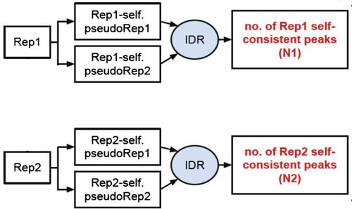
Threshold guidelines
The user manual provides guidelines on IDR thresholds which are recommended for the different types of IDR analyses. Depending on the organism you are studying and the total number of peaks you are starting with you will want to modify the thresholds accordingly.
An example for our analysis is described below:
- If starting with < 100K pre-IDR peaks for large genomes (human/mouse): For true replicates and self-consistency replicates an IDR threshold of 0.05 is more appropriate
- Use a tighter threshold for pooled-consistency since pooling and subsampling equalizes the pseudo-replicates in terms of data quality. Err on the side of caution and use more stringent IDR threshold of 0.01
This lesson has been developed by members of the teaching team at the Harvard Chan Bioinformatics Core (HBC). These are open access materials distributed under the terms of the Creative Commons Attribution license (CC BY 4.0), which permits unrestricted use, distribution, and reproduction in any medium, provided the original author and source are credited.